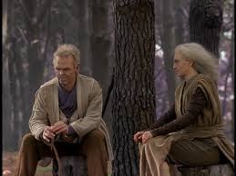
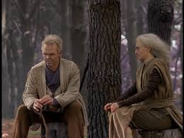

Crichton (Ben Browder)
The distinction of being a second-generation astronaut came, for Crichton, double-edged. After earning his doctorate in Theoretical Sciences, Crichton spent his time as a scientist/astronaut in his famous father's shadow, always trying to impress and please Jack Crichton, but never forced to scrabble to make a name for himself, since he was born into the legacy without even lifting a finger.
When his experimental mission aboard the Farscape One module shot him through a wormhole, Crichton found himself definitely not in Kansas anymore. Here, he was at last forced to call upon the heroic qualities he'd inherited from Dad but had never needed to use.
Crichton's natural leadership and decision-making skills make him an important member of Moya's crew; his com-plete lack of cultural understanding of alien races and technology makes his "heroics" just that much more difficult. The variety of alien races and the diversity of personalities represented by the members of Moya's crew allows Crichton an array of relationships, each intense, each in many ways beyond what his provincial human mind can sometimes easily comprehend.
Aeryn Sun (Claudia Black)
A part of the frontline Pleisar Regiment of the Peacekeeper Military, the Sebacean Aeryn Sun was a top-notch soldier and combat pilot. She worked under the command of Captain Crais until her encounter with Crichton and Moya rendered her, by Peacekeeper standards, "irreversibly contaminated," and ostracized her from the only family she'd ever known.
Aeryn was born into the military and was raised knowing nothing other than combat. While serving as a Peacekeeper, Aeryn resisted becoming close to other people; though she never spent any time alone - always part of a regiment, a battalion, a colony - she was very independent, and never allowed herself to feel emotions like love. Her experience on Moya has taught her that there are other means and methods of communicating, but, like D'Argo, she still turns to combat as her primary solution to any problem Moya might face. Even at her most diplomatic, Aeryn keeps her Pulse Rifle close at hand.
Ka D'Argo (Anthony Simcoe)
Huge and powerful, the Luxan Warrior Ka D'Argo was wrongly imprisoned by the Peacekeepers as a scapegoat for the murder of his own Sebacean wife, Lo'Laan. D'Argo and Lo'Laan fell in love (taboo by Peacekeeper standards) and gave birth to a half-Sebacean, half-Luxan son, Jothee. When the Peacekeepers found out Lo'Laan was killed by her own brother Macton, D'Argo was framed for it, arrested, and imprisoned aboard Moya.
His hatred for the Peacekeepers runs deeper than most, and he lives to reunite with his son, and to avenge the wrongs that have been done him and his family. His experience aboard Moya, and the love and friendship he's seen develop among Moya's crew has taught him patience and understanding... to some degree.
Chiana (Gigi Edgley)
The Nebari runaway, Chiana, is happiest when she has the opportunity to show off her scoundrel skills; she's a thief, a liar, a seductress and a drama queen. But beyond that, she's a very young woman, and often conceals her fears under blustery pseudo-confidence that's plausible maybe fifty percent of the time.
Her talents for subterfuge have proved useful on more than one occasion for Moya's crew, but her tendency to be contrary makes her an unlikely team player in crisis situations. Chiana doesn't do what Chiana doesn't want to do, and as a general rule, that's anything that would risk her hide, ruin her reputation, or tear her clothing. Unless, of course, that's what she was going for.
Her admiration for Crichton has softened her combative edge, over time; now, with mock reluctance she'll let him convince her to help him and the crew, whom she's grown to like and even respect. Chiana will bicker with Crichton, annoy Aeryn, go shopping with Rygel and respect Zhaan, but it's her relationship with D'Argo that really makes Moya a home for her. Chiana has become a full-fledged member of the crew, at times risking her life for her ship-mates.
Rygel XVI (voiced by Jonathan Hardy)
The Sixteenth Rygel in a line of Hynerian Dominars, Rygel was once the ruler of over 600 billion subjects in the Hynerian Empire. A disloyal cousin, Bishan, usurped Rygel's throne, and the deposed monarch found himself aboard the prison ship Zelbinion, with not a single loyal subject kowtowing to him.
A prisoner of the Peacekeepers for over 300 cycles (roughly 300 years), and now aboard Moya, Rygel still acts like a ruler. Barely two feet tall, Rygel rarely deigns to stand; instead, he floats about Moya on his ThroneSled, looking down his nose at the other members of the crew, muttering to himself, stealing what looks valuable, and eating whatever will fit in his amphibious mouth and fill his three stomachs.
With an ornery temper, a tendency to fart helium, an unnecessarily egomaniacal attitude and the notion that every-one -in particular attractive females and especially Chiana - should bow to his bidding, Rygel is not the easiest creature to spend time with. Despite all this, Moya's crew has found him to be oddly endearing, and, though it hurts them to say it, he's part of the family, too.
Scorpius (Wayne Pygram)
Scorpius' mother, Rylani, was a Sebacean colonist. Scarrans were abducted as part of a larger breeding program designed to produce a useful hybrid species. Scorpius therefore spent his childhood under the brutal tutelage of Tauza, a female Scarran obsessed with destroying his Sebacean half's 'weaknesses'. The young Scorpius finally escaped, defecting to the Peacekeepers with his knowledge of, and profound hatred for the Scarran race. Scorpius works for the Peacekeeper military, but only so far as working for them serves his purposes. His single-minded mission: to develop a means to control the creation, and travel possibilities, of the natural space phenomenon known as wormholes. Knowing that the Scarrans have the same goal, his quest has become an arms race that he is absolutely determined to win.
Being a half-breed, Scorpius maintains the physiology of both Scarrans and Sebaceans. The Scarran tendency to radiate extreme heat, coupled with the Sebacean intolerance for heat, causes problems for Scorpius, who has to wear a complex protective suit to compensate. Scorpius also has a cooling rod installed in his brain that helps regulate his temperature; the rods heat up after a time and need to be replaced or else Scorpius runs the risk of succumbing to heat delirium.
One positive of his hybrid background is Scorpius' unique ability to detect lies: a quirk of his vision allows him to monitor aberrations in most species' energy signatures.
Moya

Moya is a Leviathan, the fifth generation of these living ships. She was born in freedom, captured by Leviathan Hunters and sold to the Peacekeepers for them to use as a prison transport.
She is a great and powerful ship, with no weapons. Communicated to and taken care of by Pilot, the enormous living entity that is symbiotically fused to her Moya has adjusted to her new inhabitants and has been able to trust them enough to become their home. Like Pilot, she is anxious to serve her crew, but not at the expense of her own agenda. Her natural instincts to protect all life, however, do override her personal fear of pain and suffering.
Pilot (voiced by Lani John Tupu)

Pilot is an independent entity, but he operates symbiotically with his Leviathan (Moya); the upper half of Pilot's torso, the part that we see, is the only part of him that is entirely his own. His much larger lower half is made up of neural tentacles, which thread through and fuse with Moya's systems. With the help of the DRD's (Diagnostic Re-pair Drones) who act as his eyes and ears, Pilot maintains all of the systems on Moya necessary for the crew's survival.
Pilot is, to Moya, some combination of operator, bodyguard and partner. Because of this symbiotic fusing, he knows when she's scared, eager, excited, or sad, and he communicates Moya's thoughts to Crichton and the others. He and Moya are made complete by their ability to serve the members of the crew, but they are in no way obligated to follow the desires or needs of the crew if their own agendas disagree. Pilot is most often polite and respectful to the crew of Moya, but it's clear that his loyalty is to Moya first and the others second.
Zhaan (Virginia Hey)
An 812 year old 10th level Delvian Pa'u (priest), Pa'u Zotoh Zhaan was imprisoned for the murder of another Delvian priest - her lover - who she suspected was using his power to lead Delvia astray. During her seventeen cycles of imprisonment aboard Moya, Zhaan was able to control her "dark impulses" and her violent instincts, and since then, she's been pacifistic, kind and peaceable. She is still able to call upon her powerful dark impulses, though it hurts her and upsets her to do so.
Delvians are flora, not fauna, and therefore Zhaan, a plant-evolved being, has extreme reactions to solar energy, experiencing photogasms - intensely pleasurable sensations - when exposed to solar flares. Additionally, Zhaan knows herbs and herbal medicine intimately, which often gives her the responsibility of doctor, healer and scientist aboard Moya. Being older, wiser and more accepting of the ways of the universe than most of her shipmates, Zhaan is frequently the voice of reason among the crew... but by no means is she always the peacemaker.
Crais (Lani John Tupu)
Captain Bialar Crais was born in a Sebacean farming community, but while still a boy, he and his younger brother Tauvo were wrested from their family and conscripted against their will into the Peacekeeper military.
If you asked Crais what his crusade was, he'd tell you he was bent on avenging the brutal murder of his brother. He'd say that loudly, with gusto and insistence. But Crais knows, in his heart, that Crichton didn't murder his brother on purpose, but having no one to blame is terrifying to Crais. He needs a scapegoat, and Crichton, coupled with the "contaminated" Aeryn, fills that role perfectly.
Crais' respect for the Peacekeeper mandates is unclear; at times, he's the flag bearer for military tradition; at other times, he's a renegade. Anything that could be construed as a challenge to his authority terrifies him; he despises Scorpius for almost the same reason he despises Crichton.


 

{kind=link}
{kind=link}
{kind=link}
{kind=link}
{kind=link}
{kind=link}
{kind=link}
{kind=link}
{kind=link}
{kind=link}
{kind=link}
{kind=link}